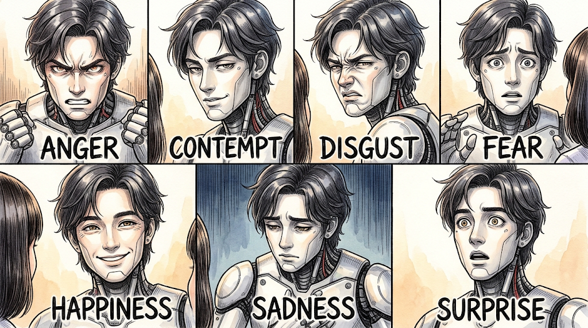
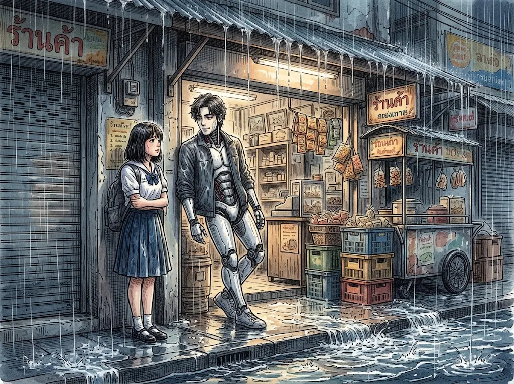

Listen to a science show about how robots are being engineered to be more human.
Why?
How?
Do you agree?
M2 · Listening
How robots are developing facial expressions
Listen to a science show about how robots are being engineered to be more human.
Why?
How?
Do you agree?

What would make you feel this way?
Say it
/ˈfeɪʃl ɪkˈspreʃnz/
Spell it
facial expressions noun
Use it
She said nothing, but her facial expressions told us she was angry.
Say it
/pəˈsiːv/
Spell it
perceive verb
Use it
Dogs can perceive sounds that people cannot hear.
Say it
/ˌɪntərˈækt/
Spell it
interact verb
Use it
Children learn to interact with each other before they can speak.
Say it
/ˌjuːnɪˈvɜːsl/
Spell it
universal adjective
Use it
A smile is universal. Every culture understands it.
Say it
/ˈviːɪkl/
Spell it
vehicle noun
Use it
Sport is a vehicle for bringing people together.
Task 1
One word is missing in each sentence on your worksheet.
In your notebook
Write the missing word. Use each word once. You may have to change the word form.
Task 1
1. You can perceive how someone feels from the look on their face.
2. A robot that can smile can interact more easily with people.
3. The same seven expressions appear in every culture, so psychologists call them universal.
Task 1
4. Your facial expressions can tell other people what you are feeling before you speak.
5. A face is a vehicle for showing emotion.
6. He clenched his fists and shouted with anger.
Task 1
7. She read his answer, laughed, and told the class a five-year-old could do better. Her voice was full of contempt.
8. He wrinkled his nose at the disgusting smell.
9. Her hands were shaking and her face was white with fear.
Task 1
10. The exam results were on the wall. He could not hide his happiness when he found his name at the top.
11. There was sadness in her voice when she talked about her unhappy experience at her old school.
12. The box was empty. He raised his eyebrows in surprise.
Task 2
We are about to watch a National Geographic video about scientists who are building androids with human expressions. The video is at high B1 level.
On your worksheet
The seven sentences are out of order. Number them in the correct order as you listen.
Are you ready?
Task 2
A
What Erica can show you.
B
Why facial expressions exist.
C
How faces help us connect with machines.
D
What these robots could be used for.
E
A way to bring us all together.
F
The seven expressions everyone shares.
G
Why a robot needs a face.
Task 2
1
Why facial expressions exist.
2
The seven expressions everyone shares.
3
Why a robot needs a face.
4
What Erica can show you.
5
What these robots could be used for.
6
How faces help us connect with machines.
7
A way to bring us all together.
You know you are good at listening when you can write single words into a summary.
Original
I had this friend called Wan who had to go to the toilet every class. We all knew he was just being lazy.
Summary
I used to have a lazy friend called Wan who skipped classes by going to the toilet.
Task 3
Here is a summary of the first part of the video.
On your worksheet
Before we listen, guess what the five missing words will be.
Then watch and complete the summary.
We will hear the tape once. If it is hard, follow the transcript as you listen.
The tape runs from 0:00 to 2:05.
Task 3
Humans can communicate with each other even if their cultures, languages or beliefs are different. David Matsumoto says the face is one of the most complex signal systems in the body. When we wrinkle our nose in disgust, we also clamp down on our nasal passages, so that bad smells cannot come in. Darwin thought that expressions let us act at once, and that they helped our ancestors to survive. Today psychologists agree that seven expressions are recognised everywhere, from anger to surprise.
Good listeners can also say whether what they hear is true, false, or was never said at all.
On September 11, 2001, several jet airliners were flown into the World Trade Center buildings in Manhattan, New York, causing thousands of deaths and the collapse of both buildings.
The pilots of the planes were awful people.
NOT GIVEN
This terrible event caused destruction to buildings and people.
TRUE
This terrible event happened a decade ago.
FALSE
Task 4
Read the five statements on your worksheet.
In your notebook
Before you listen, guess. Is each statement TRUE, FALSE or NOT GIVEN?
Then watch the next part and check.
The tape runs from 2:11 to 4:31.
Task 4 · statement 1
Hiroshi has been developing human-like robots for many years.
NOT GIVEN
He says what he is trying to build. He never says how long he has been doing it.
Transcript: 2:24 to 3:45
Task 4 · statement 2
Erica can have a natural conversation with visitors.
TRUE
Hiroshi says Erica can talk with visitors for five or ten minutes, and it sounds natural.
Transcript: 3:50 to 4:00
Task 4 · statement 3
Hiroshi is a professor of psychology.
FALSE
Hiroshi says he is a roboticist. The professor of psychology in this video is David Matsumoto.
Transcript: 2:36, and 0:32
Task 4 · statement 4
Erica understands every language she hears.
FALSE
Hiroshi says androids can exchange facial expressions even when the android does not understand the language.
Transcript: 4:25 to 4:31
Task 4 · statement 5
The direction a robot looks in is important to Hiroshi.
TRUE
He says facial expressions and control of where the robot looks are the first thing a robot needs.
Transcript: 3:04 to 3:08
An educated guess is a guess we make from evidence. We can also call it an inference.

Does the girl have an umbrella?
We can infer
that she does not. We cannot see one, and she is standing in a doorway instead of walking in the rain.
Task 5
Look at the five questions in Task 5 on your worksheet.
In your notebook
None of the answers is in the tape. You have to work each one out.
Try to answer them first, then check as you listen.
If the tape is difficult, read along with the transcript.
The tape runs from 4:34 to the end.
Task 5
1. Would Hiroshi take a better-paid job that had nothing to do with robotics?
Probably not. He cannot control his excitement about building robots.
2. Why would a face make people more willing to let a robot into their lives?
Because we read a face for what a person feels and intends. A machine with no face gives us nothing to read.
3. Hiroshi names helping the elderly and guiding tourists. Why do those jobs need a face more than a factory job does?
Both mean talking to someone who has to trust it. A factory robot only has to move things.
Task 5
4. Two people with no shared language can still share some information. What can they share, and what can they not?
They can share how they feel. They cannot share facts, names or reasons.
5. Matsumoto calls expressions the closest thing we have to a universal language. Why “the closest thing” and not “a universal language”?
Because a face carries feeling, not words. It is not a language; it is the nearest thing to one.
None of these answers is in the tape. Every one of them was worked out from what it says.
In previous lessons you have learned these five moves.
1
Present your opinion, with reasons and evidence.
2
Echo what you heard, so your partner knows you understood.
3
Challenge evidence that is weak.
4
Concede to evidence that is strong.
5
Reach agreement.
We will practise those techniques now.
You will talk to three different partners.
Each one gets the same question, and two minutes.
Should robots have human expressions? Why or why not?
In your notebook
You have two minutes. Write down your argument: your position, your reason, and your evidence.
Two minutes each, rotating three times.